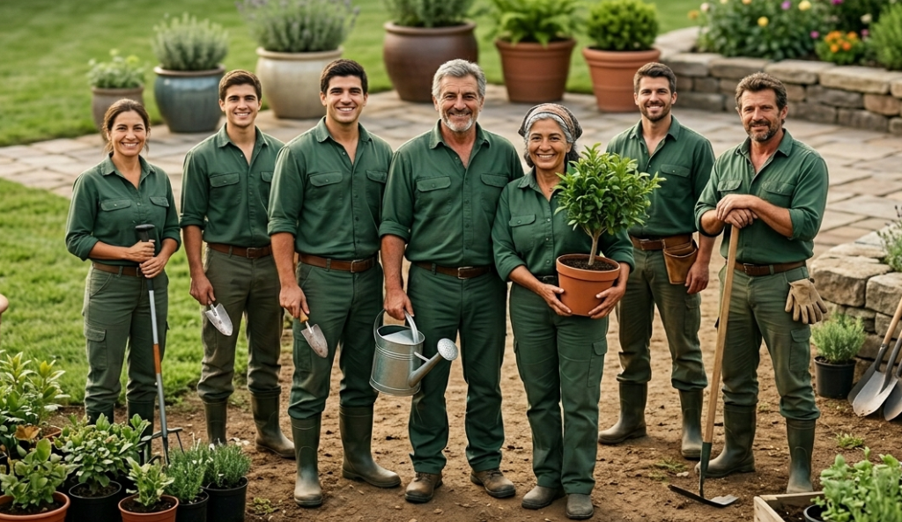

Nuestros Servicios

Corte de pasto
Mantenimiento preventivo y estético del césped. Utilizamos maquinaria calibrada para asegurar un corte uniforme a la altura óptima, lo que promueve un crecimiento saludable, aumenta la densidad y evita el daño estructural a la raíz.
Desde $15.000 CLP *El precio varía según el tamaño del terreno.
Poda de árboles
Intervención estructural y sanitaria de especies arbóreas. Realizamos cortes limpios para retirar ramas secas, enfermas o en riesgo de caída, mejorando la seguridad del entorno, optimizando la entrada de luz y garantizando la vitalidad del árbol a largo plazo.
Desde $25.000 CLP *El precio varía según altura y especie.
Sistemas de riego
Diseño, instalación y mantención de riego automatizado. Optimizamos el consumo hídrico de su propiedad mediante sistemas de goteo y aspersión, configurados para responder a los requerimientos específicos de humedad de cada zona de su jardín.
Desde $40.000 CLP *Sujeto a evaluación técnica previa.
Control de plagas
Diagnóstico temprano y tratamiento efectivo contra agentes patógenos e insectos invasores. Aplicamos productos regulados de alta eficacia que erradican la amenaza de raíz, sin comprometer el equilibrio del ecosistema de su jardín ni la seguridad de su entorno.
Desde $20.000 CLP *Depende de la severidad y tipo de plaga.Nuestra Historia
Huerto Feliz comenzó sus operaciones hace 10 años como un proyecto familiar enfocado en la mantención de jardines residenciales a pequeña escala. Gracias a la confianza de nuestros primeros clientes y a la constante actualización en técnicas de cuidado vegetal, fuimos escalando nuestra capacidad operativa.

Hoy, lo que comenzó con un enfoque local se ha convertido en una empresa de servicios integrales consolidada. En esta década, hemos mantenido nuestro rigor y atención al detalle, incorporando nuevas tecnologías y un equipo técnico especializado.

Lo que dicen nuestros clientes

"Excelente servicio. Mi jardín nunca había lucido tan verde y lleno de flores. ¡Totalmente recomendados!"
- María González

"Solucionaron mi problema de riego muy rápido. Tienen un equipo muy profesional y amable."
- Carlos Rodríguez

"Gracias a Huerto Feliz, nuestro patio trasero es ahora nuestro lugar favorito de la casa."
- Camila Soto
Información
Proveemos mantenimiento integral para asegurar la salud y estética de sus áreas verdes. Trabajamos con eficiencia, responsabilidad ambiental y equipos capacitados, garantizando el cumplimiento de plazos y resultados de alta calidad.


Encuéntranos en nuestra sucursal ubicada en Pedro Aguirre Cerda 2115 para recibir asesoría personalizada, conocer nuestros estándares de trabajo y coordinar la evaluación de tu terreno. ¡Te esperamos para conversar sobre tu próximo proyecto!
Nuestra Ubicación
- 📍 Indicaciones: Sector Las Ánimas por Av. Pedro Aguirre Cerda
- 📞 Teléfono 1: +56 9 1234 5678
- 📞 Teléfono 2: +56 9 0234 5678
- ✉️ Correo: contacto@huertofeliz.cl